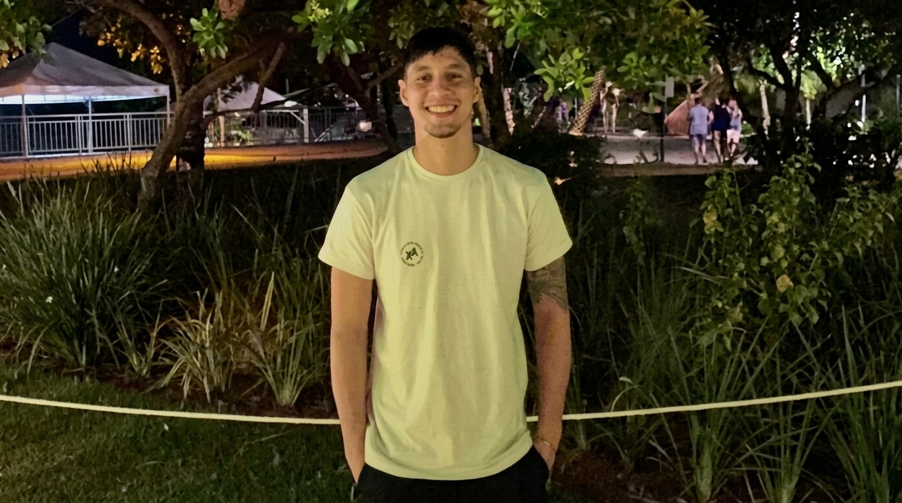
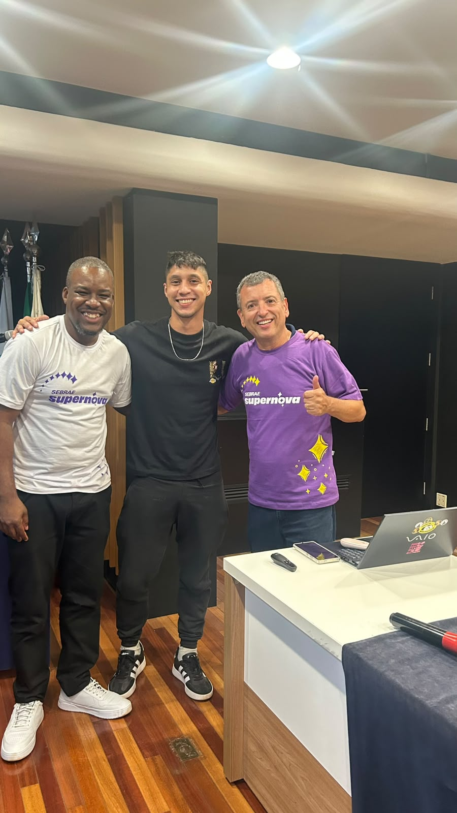
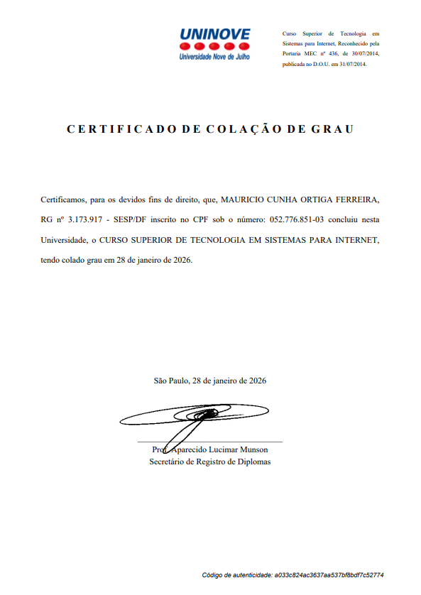
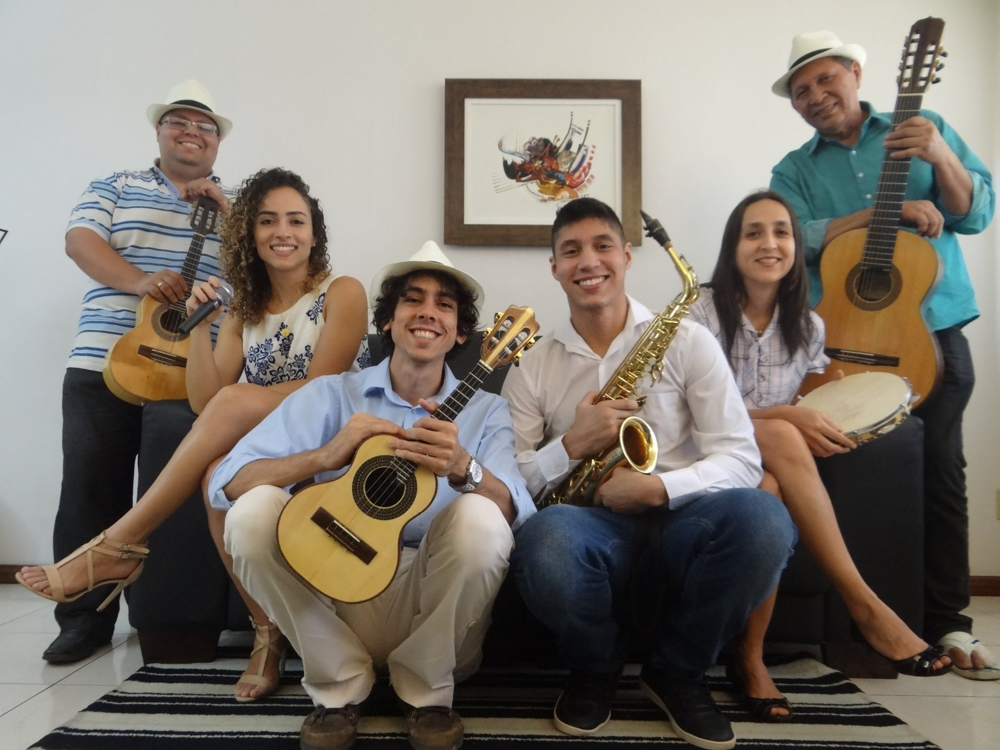
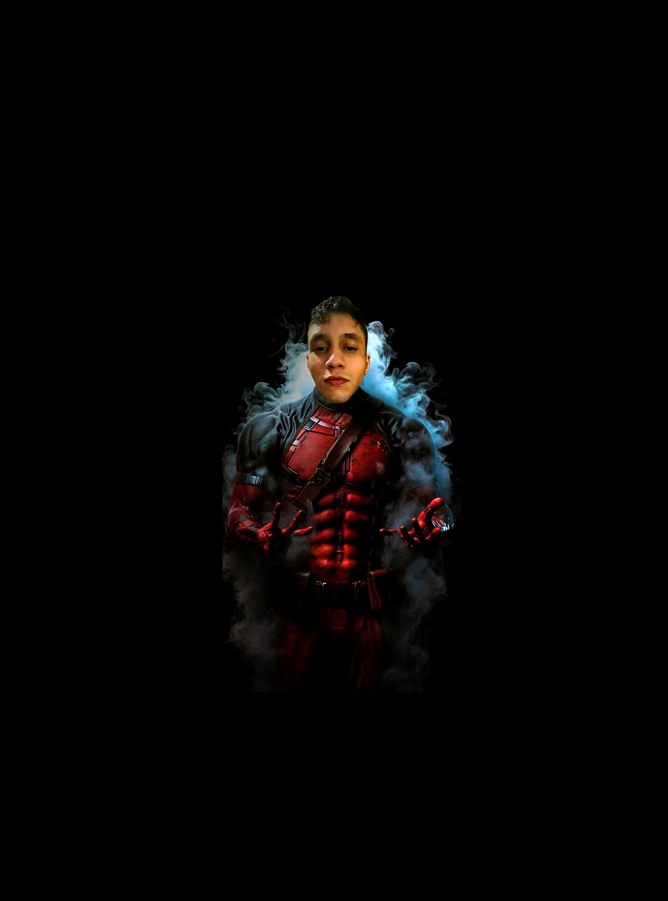
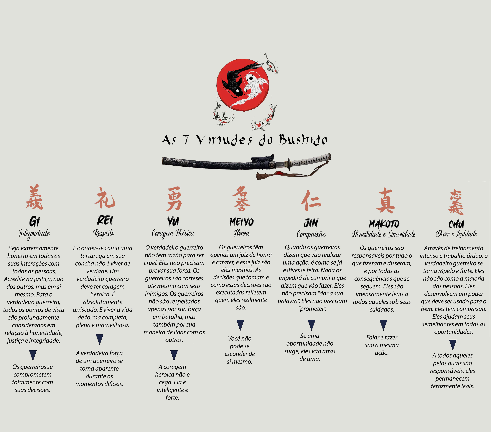
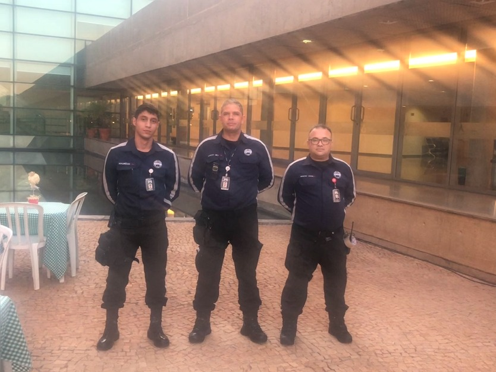

Projeto Feat Hype
Projeto desenvolvido no Figma, com foco em criar um aplicativo que facilite a organização de eventos tanto para usuários que queiram criar um evento quanto para fornecedores que desejam oferecer seus serviços.
Conhecer o projetoTenho 30 anos, sou natural de Brasília-DF. Sou formado em Música e Análise e Desenvolvimento de Sistemas para Internet.
Atualmente estou indo para a minha terceira formação superior em Ciência da Computação, estou me especializando em UI/UX e banco de dados onde criei admiração e fascínio. Tenho paixão por criar soluções que proporcionem inovação, com fluidez e simplicidade, a quem as utilizar. Com o desenvolvimento de habilidades em HTML, CSS, JavaScript, busco sempre aprender e aplicar novas tecnologias para entregar projetos de alta qualidade.

Alguns dos trabalhos que desenvolvi. Use as setas para ver cada um em detalhes.
Projeto desenvolvido no Figma, com foco em criar um aplicativo que facilite a organização de eventos tanto para usuários que queiram criar um evento quanto para fornecedores que desejam oferecer seus serviços.
Conhecer o projetoCriando um database com tables e inserindo registros com 10 registros em cada tabela, com listagem de queries que estão no arquivo.
Conhecer o projetoSistema de banco de dados que cadastra os alunos, os instrutores, os planos vendidos, modalidades e turmas, além de controlar os pagamentos das mensalidades, a frequência dos alunos e as fichas de treino. Utilizamos os comandos SQL: DDL, DML, DCL, TCL, DQL como aplicação.
Conhecer o projetoUm pouco da minha trajetória profissional e pessoal.



Alguns fatos rápidos, interesses e paixões que fazem parte da minha rotina fora dos projetos.




Estou buscando oportunidades na área de Desenvolvimento UI/UX e Banco de dados. Se você tem uma vaga, um projeto ou só quer conversar, fale comigo por um dos canais abaixo.